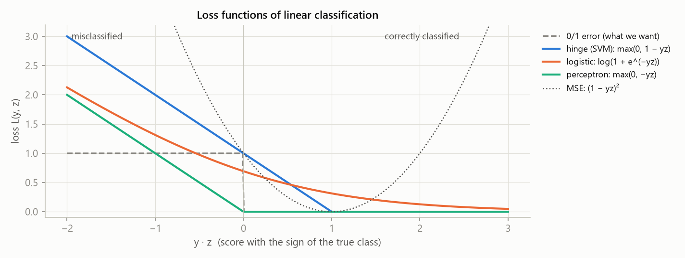
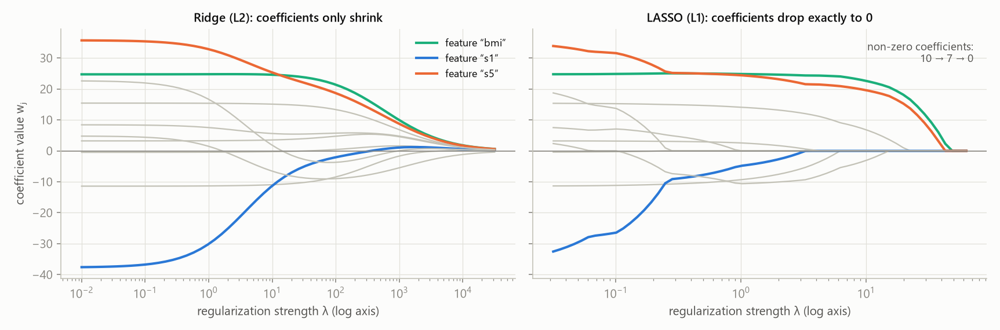
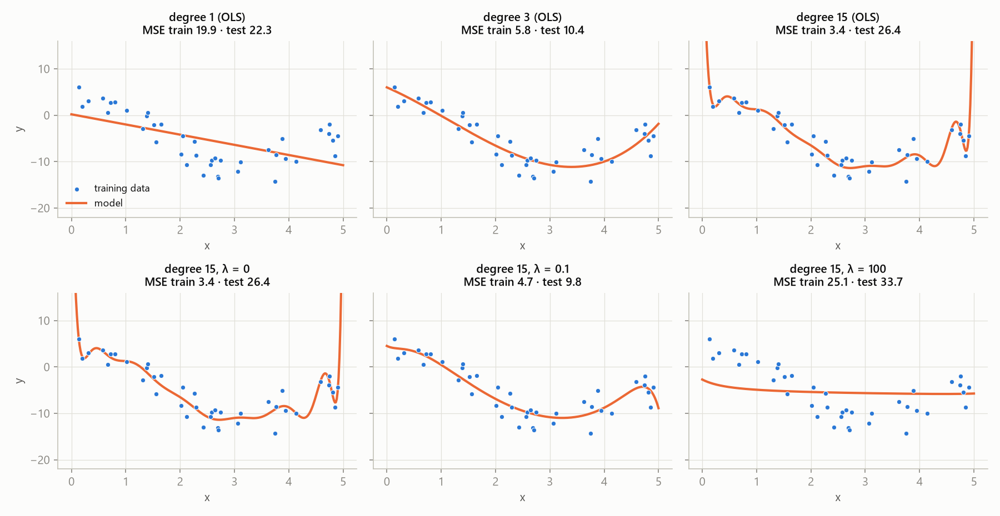
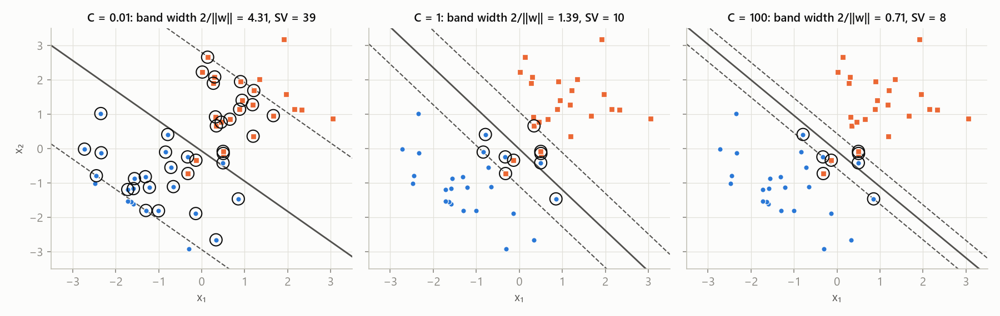
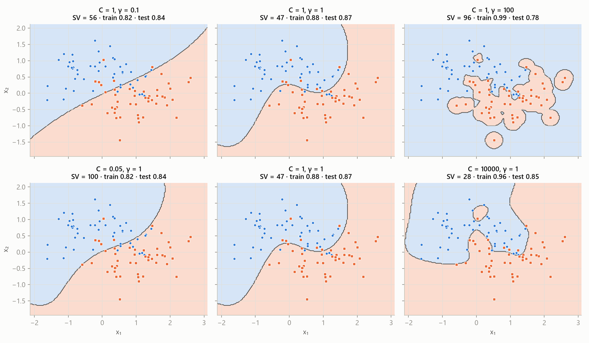

MLR – exam notes · Linear models, kernels and SVM – MLR · https://balnerm.github.io/pripravy/mlr/en/04_linearni.html
Lecture 4
Linear models, kernels and SVM
One dot product of weights and features can predict a number (regression) as well as a class (classification). Everything else – OLS, LAD, ridge, LASSO, logistic regression, perceptron, SVM – is just a choice of loss function and regularization. The chapter also shows how to teach a linear model non-linear relationships: by polynomial feature expansion and by the kernel trick in the dual form.
One equation, two tasks
A linear model predicts using the dot product of a weight vector and a feature vector: \[ g(\mathbf x) = \mathbf w^\top\mathbf x + b = w_1x_1 + \dots + w_dx_d + b \] In regression the prediction is directly this value, in binary classification its sign: \[ \begin{aligned} \text{regression:}\quad & \hat y = \mathbf w^\top\mathbf x + b \in \mathbb R \\ \text{classification:}\quad & \hat y = \operatorname{sign}(\mathbf w^\top\mathbf x + b) \in \{-1, +1\} \end{aligned} \]
each feature gets a weight (importance and direction of influence) and the results are added up. Regression asks “how much”, classification “on which side of the hyperplane”.
The bias trick writes the affine function \(f(\mathbf x) = \mathbf w^\top\mathbf x + b\) as purely linear by adding a constant component 1 to the feature vector and the offset \(b\) to the weights: \[ \tilde{\mathbf x} = (\mathbf x, 1),\quad \tilde{\mathbf w} = (\mathbf w, b) \quad\Rightarrow\quad f(\mathbf x) = \tilde{\mathbf w}^\top\tilde{\mathbf x} \]
the offset stops being a special parameter – it is just another weight for a feature that is always 1. Formulas and code become simpler (the data matrix \(X\) gets a column of ones).
The decision boundary of a linear classifier is the set of points where \(\mathbf w^\top\mathbf x + b = 0\) – in 1D a point (threshold), in 2D a line, in general a hyperplane. The vector \(\mathbf w\) is perpendicular to it.
the line that splits the space into a “plus” side and a “minus” side.
| \(L(y, z)\) | loss function – how much we punish the prediction \(z = \mathbf w^\top\mathbf x\) when the truth is \(y\) |
| \(\Omega(\mathbf w)\) | regularization: \(\|\mathbf w\|_2^2\) (ridge, L2) or \(\|\mathbf w\|_1\) (LASSO, L1) |
| \(\lambda \ge 0\) | weight of the regularization – trade-off between fitting the data and “simple” weights |
| task | model / loss | \(L(y, z)\) | properties |
|---|---|---|---|
| regression | OLS – MSE | \((y - z)^2\) | smooth, closed form, sensitive to outliers |
| LAD – MAE | \(|y - z|\) | robust to outliers, solved by LP / IRLS (no closed form) | |
| classification \(y\in\{-1,+1\}\) | SVM – hinge | \(\max(0, 1 - yz)\) | maximum margin |
| perceptron | \(\max(0, -yz)\) | punishes only misclassified points | |
| logistic regression – log-loss | \(\log(1 + e^{-yz})\) | probabilistic output | |
| LDA | Fisher criterion | see chapter 3 |

The real error (0/1) cannot be optimized with a gradient, so we replace it with smooth or convex substitutes. Hinge is zero only when the point is correct and with a margin (\(yz \ge 1\)) – hence the SVM margin. The perceptron is happy with the correct side (\(yz \gt 0\)). The logistic loss is never exactly zero, it only decreases. MSE also punishes points that are “too correct” (\(yz \gt 1\)) – that is why the MSE classifier is sensitive to outliers and works poorly.
Linear regression
Model \(y = wx + b\), points (1, 2) and (3, 5). In matrix form \(\mathbf y = X\tilde{\mathbf w}\), where \(X\) has a column of ones and a column \(x\):
\[ X = \begin{pmatrix}1 & 1\\ 1 & 3\end{pmatrix},\qquad \det X = 1\cdot3 - 1\cdot1 = 2 \]Solving the system:
\[ \begin{aligned} \tilde{\mathbf w} = X^{-1}\mathbf y &= \frac12\begin{pmatrix}3 & -1\\ -1 & 1\end{pmatrix}\begin{pmatrix}2\\ 5\end{pmatrix} \\ &= \frac12\begin{pmatrix}3\cdot2 - 5\\ -2 + 5\end{pmatrix} = \begin{pmatrix}0.5\\ 1.5\end{pmatrix} \end{aligned} \]So \(b = 0.5\), \(w = 1.5\). For two points the line passes exactly through both; for more points this is in general not possible – we have to make \(\mathbf y\) and \(X\tilde{\mathbf w}\) “as similar as possible”.
Ordinary least squares is linear regression that chooses the weights minimizing the sum of squared residuals: \[ \min_{\mathbf w}\sum_i(\mathbf x_i^\top\mathbf w - y_i)^2 = \min_{\mathbf w}\|X\mathbf w - \mathbf y\|_2^2 \] It is a convex problem without constraints with a closed-form solution \[ \mathbf w^\ast = (X^\top X)^{-1}X^\top\mathbf y = X^\dagger\mathbf y \] (\(X^\dagger\) is the Moore–Penrose pseudoinverse).
“fit a line (plane) through the points so that the sum of their squared vertical distances from it is smallest”. It can also be solved by gradient descent, but a formula is available.
| \(X \in \mathbb R^{n\times d}\) | data matrix (rows are samples, including the column of ones) |
| \(\mathbf y \in \mathbb R^n\) | target values |
| \(X^\top X\) | a \(d\times d\) matrix; shape check: \(X^\top(X\mathbf w - \mathbf y)\) is \((d\times n)(n\times1) = d\times1\) – the shape of \(\mathbf w\) |
In code the system is solved (np.linalg.solve); the inverse is not computed explicitly.
Points (0, 1), (1, 2), (2, 2) – no line passes through all of them. The matrix \(X\) has a column of ones and a column \(x = (0, 1, 2)\), the target is \(\mathbf y = (1, 2, 2)\).
1. Products for the normal equations:
\[ X^\top X = \begin{pmatrix}3 & 3\\ 3 & 5\end{pmatrix},\qquad X^\top\mathbf y = \begin{pmatrix}5\\ 6\end{pmatrix} \]2. Inverse (\(\det = 3\cdot5 - 3\cdot3 = 6\)) and solution:
\[ \tilde{\mathbf w} = \frac16\begin{pmatrix}5 & -3\\ -3 & 3\end{pmatrix}\begin{pmatrix}5\\6\end{pmatrix} = \begin{pmatrix}7/6\\ 1/2\end{pmatrix} \]3. The resulting line and residuals:
\[ \begin{aligned} \hat y &= \tfrac76 + \tfrac12x \\ y_i - \hat y_i &= \left(-\tfrac16,\ \tfrac13,\ -\tfrac16\right) \\ \textstyle\sum_i(y_i - \hat y_i)^2 &= \tfrac1{36} + \tfrac4{36} + \tfrac1{36} = \tfrac16 \end{aligned} \]The sum of squares \(\frac16\) is the smallest any line can reach.
Ridge with \(\lambda = 1\) (we penalize only the slope, the offset is usually not penalized). We add \(\lambda\) to \(X^\top X\) only for the slope:
\[ X^\top X + \begin{pmatrix}0 & 0\\ 0 & 1\end{pmatrix} = \begin{pmatrix}3 & 3\\ 3 & 6\end{pmatrix},\qquad \det = 18 - 9 = 9 \] \[ \tilde{\mathbf w} = \frac19\begin{pmatrix}6 & -3\\ -3 & 3\end{pmatrix}\begin{pmatrix}5\\6\end{pmatrix} = \begin{pmatrix}4/3\\ 1/3\end{pmatrix} \]The slope shrinks from \(\frac12\) to \(\frac13\) and the offset moves so that the line stays close to the data. (Own recalculation for other \(\lambda\): 10 ⇒ slope 0.083; 100 ⇒ 0.010 – the line approaches a horizontal one at the level of the mean \(\bar y = 5/3\).)
LAD (least absolute deviations) minimizes the sum of absolute values of the residuals \(\|X\mathbf w - \mathbf y\|_1 = \sum_i|\mathbf x_i^\top\mathbf w - y_i|\). It has no closed-form solution; it is solved by optimization (linear programming, IRLS).
L1 is less sensitive to large values – one huge error is not squared – so LAD is robust to outliers. On the other hand it is more sensitive to very small errors: the square of a small error is negligible (\(0.01^2 = 0.0001\)), the absolute value is not.
Regularization: ridge and LASSO
Ridge regression minimizes \(\|X\mathbf w - \mathbf y\|_2^2 + \lambda\|\mathbf w\|_2^2\). It has the closed-form solution \(\mathbf w^\ast = (X^\top X + \lambda I)^{-1}X^\top\mathbf y\).
we add a penalty for large weights to the error. The coefficients shrink smoothly towards zero, but none becomes exactly zero – the model keeps all features. Adding \(\lambda I\) also makes sure the matrix can always be inverted.
LASSO (least absolute shrinkage and selection operator) minimizes \(\|X\mathbf w - \mathbf y\|_2^2 + \lambda\|\mathbf w\|_1\). It has no closed-form solution and is solved by convex optimization; some coefficients come out exactly zero.
a penalty on the sum of absolute values of the weights “switches off” unneeded features – so LASSO does feature selection (an embedded method) and is robust to irrelevant features. The larger \(\lambda\), the fewer selected features. The same regularization can be used with LAD and linear classifiers too.

Ridge pulls all coefficients smoothly towards zero, but until \(\lambda\) is huge none of them is zero. LASSO “switches them off” one by one – the number of non-zero coefficients drops 10 → 7 → 0. Large \(\lambda\) = a simpler model (in the end a constant = the mean).
| parameter | what it means | ↑ when I increase it | ↓ when I decrease it |
|---|---|---|---|
\(\lambda\) (ridge; alpha in sklearn) | weight of the L2 penalty on the size of the weights | coefficients shrink towards 0, smoother model, lower variance, higher bias; for \(\lambda\to\infty\) a constant prediction (underfitting) | approaches OLS: better fit of the training data, but overfitting with many features / a high polynomial degree; unstable with correlated features |
| \(\lambda\) (LASSO) | weight of the L1 penalty | more coefficients exactly 0 = fewer selected features, simpler model | more features in the model, at \(\lambda = 0\) OLS |
| MSE vs. MAE loss | square vs. absolute value of the residual | MSE: smooth, closed form, outliers “pull” the line; MAE (LAD): robust to outliers, no closed form | |
\(\lambda\) is tuned on validation data / in CV on a logarithmic grid (0.001, 0.01, …, 1000). The features must be standardized – otherwise the penalty punishes features according to their units.
Non-linear features: polynomial regression
Polynomial regression of degree \(m\) models \(y_i = \beta_0 + \beta_1x_i + \beta_2x_i^2 + \dots + \beta_mx_i^m\). It is ordinary linear regression on transformed features (the matrix columns are \(1, x, x^2, \dots, x^m\)) – the model is non-linear in the input but linear in the parameters.
we do not change the model, we change what we feed into it. The coefficients are estimated just as in linear regression, only \(X\) is transformed. As with PCA, the expansion can also be done implicitly with a kernel – but we need the dual form.

Underfitting: degree 1 (a line does not capture the shape, both training and test error are high, 19.9 / 22.3) and degree 15 with \(\lambda = 100\) (regularization “flattened” it almost to a constant, 25.1 / 33.7). Overfitting: degree 15 without regularization – the lowest training error (3.4), but wild oscillations and a large test error (26.4). Good: degree 3 (5.8 / 10.4) or degree 15 with small regularization \(\lambda = 0.1\) (4.7 / 9.8). Regularization lets you use a rich model and tame it at the same time.
| parameter | what it means | ↑ when I increase it | ↓ when I decrease it |
|---|---|---|---|
| polynomial degree \(m\) | highest power of the feature (model complexity) | more flexible curve, training error ↓; from a certain degree oscillations between points and at the edges, test error ↑ (overfitting); the number of features grows fast (\(\binom{d+m}{m}\)) | simpler, smoother curve; too low a degree does not capture the shape (underfitting) |
| \(\lambda\) | regularization of the coefficients | tames the oscillations, flattens the model if too large (underfitting) | more freedom, at 0 plain OLS |
the two hyperparameters are linked – a higher degree tolerates more regularization. They are tuned together in CV.
Kernels and the dual form
Polynomial expansion grows fast: the number of monomials up to degree \(m\) in \(d\) variables is \(\binom{d+m}{m}\). For \(m = 3\):
- \(d = 2\): 10 monomials,
- \(d = 10\): 286 monomials,
- \(d = 100\): 176,851 monomials.
The RBF kernel even corresponds to an infinite-dimensional \(\Phi\). Key idea: many ML algorithms have a dual form in which the data appear only in dot products \(\Phi(\mathbf x_i)^\top\Phi(\mathbf x_j)\) – and a kernel can compute those cheaply. Example from chapter 3 for \(\mathbf x_i = (1, 2)\), \(\mathbf x_j = (3, 1)\):
\[ (\mathbf x_i^\top\mathbf x_j)^2 = (1\cdot3 + 2\cdot1)^2 = 5^2 = 25 = \underbrace{9 + 4 + 12}_{\Phi(\mathbf x_i)^\top\Phi(\mathbf x_j)} \]A kernel function is a function \(k: \mathbb R^d\times\mathbb R^d\to\mathbb R\) for which there exists a mapping \(\Phi\) into a (possibly high-dimensional) space such that \(k(\mathbf x_i, \mathbf x_j) = \Phi(\mathbf x_i)^\top\Phi(\mathbf x_j)\). The kernel matrix \(K\) contains the values \(K_{ij} = k(\mathbf x_i, \mathbf x_j)\) for all pairs of training samples and is positive semidefinite.
a kernel is a “measure of similarity” that behaves like a dot product in another space. The kernel function replaces \(\mathbf x_i^\top\mathbf x_j\) and the kernel matrix replaces \(XX^\top\).
| \(p\) | degree of the polynomial kernel (higher = more complex model) |
| \(c\) | offset – \(c \gt 0\) also adds monomials of lower degrees |
| \(\sigma\), \(\gamma = 1/2\sigma^2\) | width of the RBF kernel (Gaussian) and its inverse – how fast similarity drops with distance |
The primal form looks for the weights (it solves a system with a \(d\times d\) matrix): \[ \begin{aligned} \mathbf w &= (X^\top X + \lambda I)^{-1}X^\top\mathbf y \\ \hat y &= \mathbf x_{\text{new}}^\top\mathbf w \end{aligned} \] The dual form looks for coefficients of the samples (a system with an \(n\times n\) matrix): \[ \begin{aligned} \boldsymbol\alpha &= (XX^\top + \lambda I)^{-1}\mathbf y \\ \mathbf w &= X^\top\boldsymbol\alpha = \textstyle\sum_i\alpha_i\mathbf x_i \\ \hat y &= \textstyle\sum_i\alpha_i\,\mathbf x_i^\top\mathbf x_{\text{new}} \end{aligned} \]
the weights are a linear combination of the training samples. The primal solves a system the size of the number of features, the dual one the size of the number of samples – the smaller one is faster. The dual contains the data only in dot products, and that is why it can be “kernelized”.
Kernel ridge regression is dual ridge regression in which the dot products are replaced by a kernel: \[ \begin{aligned} \boldsymbol\alpha^\ast &= (K + \lambda I)^{-1}\mathbf y \\ \hat y_{\text{new}} &= \textstyle\sum_i\alpha_i\,k(\mathbf x_i, \mathbf x_{\text{new}}) \end{aligned} \] For more new samples at once \(\hat{\mathbf y}_{\text{new}} = K_{\text{new}}\boldsymbol\alpha\), where \((K_{\text{new}})_{ij} = k(\mathbf x_{\text{new},i}, \mathbf x_j)\).
an implicit feature transformation gives the same result as an explicit one, but the computational cost does not depend on the dimension of the expanded space – only on the number of samples.
Linear classification
Data are linearly separable if there is a line (in general a hyperplane) that separates all positive samples from all negative ones without error.
real data are noisy, overlap or have wrong labels, so exact separability almost never holds. It is a theoretical concept needed for the hard-margin SVM and for the convergence of the perceptron.
LDA as a classifier (review of chapter 3) – direction and threshold:
\[ \begin{aligned} \mathbf w &= S_W^{-1}(\boldsymbol\mu_1 - \boldsymbol\mu_2) \\ t^\ast &= \tfrac12(\boldsymbol\mu_1 + \boldsymbol\mu_2)^\top\mathbf w - \ln\tfrac{\pi_1}{\pi_2} \end{aligned} \]where \(\pi_c\) are the prior probabilities of the classes. MSE classifier: train a regression (MSE) on labels \(\pm1\) and take the sign – simple, with a closed form, but sensitive to outliers and performing poorly (it also punishes points that are “too correct”).
Logistic regression is a probabilistic linear classifier: \[ p(y = 1\mid\mathbf x) = \sigma(z) = \frac{1}{1 + e^{-z}},\qquad z = \mathbf w^\top\mathbf x + b \] It predicts class 1 when \(\sigma(z) \ge 0.5\) (equivalently \(\hat y = \operatorname{sign}(z)\)). It is trained by minimizing the cross-entropy (log-loss); for \(y \in \{0, 1\}\): \[ L = -y\log\sigma(z) - (1 - y)\log(1 - \sigma(z)) \] and equivalently for \(y \in \{-1, +1\}\): \[ L = \log(1 + e^{-yz}) \]
the sigmoid “squeezes” the linear score into the interval (0, 1), so the output can be read as a probability. The loss is convex (solved by gradient descent), less sensitive to outliers than MSE, regularization can be added and the outputs are calibrated (if the model fits the data). The same loss is used in deep learning – the linear model is just replaced by a network.
The perceptron is a linear classifier \(\hat y = \operatorname{sign}(\tilde{\mathbf w}^\top\tilde{\mathbf x})\) trained by an iterative rule: for every sample that is misclassified (\(y_i\tilde{\mathbf w}^\top\tilde{\mathbf x}_i \le 0\)) it moves the weights towards it: \[ \tilde{\mathbf w} \leftarrow \tilde{\mathbf w} + \eta\,y_i\tilde{\mathbf x}_i \] It corresponds to the loss \(\max(0, -y\tilde{\mathbf w}^\top\tilde{\mathbf x})\).
“when you make a mistake, turn the boundary a little towards the wrong point”; multiplying by \(y = \pm1\) picks the direction automatically. It provably converges only for linearly separable classes – otherwise it cycles forever.
def train_perceptron(X, y, epochs):
n, d = X.shape
w = np.zeros(d)
for _ in range(epochs):
for i in range(n):
y_hat = X[i] @ w
if y[i] * y_hat <= 0:
w += y[i] * X[i]
return wEach update adds \(y_i\mathbf x_i\) ⇒ the weights are always a weighted sum of the samples, \(\mathbf w = \sum_i\alpha_i\mathbf x_i\). That is exactly the definition of the weights \(\alpha\) in the dual form – an intuitive “proof” that the dual exists.
Support vector machines (SVM)
For separable data there are infinitely many boundaries with zero error. Which one to choose? SVM picks the one with the largest margin – the largest “safe zone” between the boundary and the nearest points of both classes. A wide margin means that a small shift (noise) of a new point does not change its classification.
The margin is the distance of the decision hyperplane from the nearest training points; the distance of a point from the hyperplane \((\mathbf w, b)\) is \(|\mathbf w^\top\mathbf x_i + b|/\|\mathbf w\|\). With the normalization \(y_i(\mathbf w^\top\mathbf x_i + b) \ge 1\) the nearest points lie exactly at the distance \(1/\|\mathbf w\|\) (the band width is \(2/\|\mathbf w\|\)). Support vectors are the training points that lie on the margin or inside it; only they determine \(\mathbf w\) and \(b\).
the condition “≥ 1” only fixes the scale: instead of \(\|\mathbf w\| = 1\) with a variable margin we fix the margin to 1 and let the size of \(\mathbf w\) change. Maximizing \(1/\|\mathbf w\|\) is the same as minimizing \(\frac12\|\mathbf w\|^2\). If we deleted the other points, we would get the same boundary.
Hard-margin SVM solves the problem \[ \min_{\mathbf w, b}\ \tfrac12\|\mathbf w\|^2 \quad\text{subject to}\quad y_i(\mathbf w^\top\mathbf x_i + b) \ge 1\ \ \forall i \] The dual problem is a convex quadratic program \[ \begin{aligned} &\max_{\boldsymbol\alpha}\ \sum_i\alpha_i - \frac12\sum_{i,j}\alpha_i\alpha_jy_iy_j\,\mathbf x_i^\top\mathbf x_j \\ &\text{s.t.}\ \ \textstyle\sum_i\alpha_iy_i = 0,\quad \boldsymbol\alpha \ge 0 \end{aligned} \] From its solution we get the weights and the decision rule: \[ \begin{aligned} \mathbf w &= \textstyle\sum_i\alpha_iy_i\mathbf x_i \\ \hat y &= \operatorname{sign}\Big(\textstyle\sum_{i\in SV}\alpha_iy_i\,\mathbf x_i^\top\mathbf x + b\Big) \end{aligned} \]
QP has efficient algorithms with a guaranteed global optimum. \(\alpha_i \gt 0\) exactly for the support vectors (\(y_i(\mathbf w^\top\mathbf x_i + b) = 1\)); only they are needed for prediction – it is fast. It works only for separable data.
\(\mathbf x_1 = (1, 1)\), \(y_1 = +1\); \(\mathbf x_2 = (-1, -1)\), \(y_2 = -1\).
1. Geometry. The boundary is the perpendicular bisector, the line \(x_1 + x_2 = 0\). Each point is at distance \(\sqrt2\) from it, so
\[ \frac{1}{\|\mathbf w\|} = \sqrt2 \quad\Rightarrow\quad \|\mathbf w\| = \frac{1}{\sqrt2} \]2. Primal. \(\mathbf w = (\frac12, \frac12)\), \(b = 0\). Check of the constraints and the value of the objective:
\[ \begin{aligned} y_1(\mathbf w^\top\mathbf x_1 + b) &= \tfrac12 + \tfrac12 = 1 \\ y_2(\mathbf w^\top\mathbf x_2 + b) &= (-1)\cdot(-1) = 1 \\ \tfrac12\|\mathbf w\|^2 &= \tfrac12\left(\tfrac14 + \tfrac14\right) = \tfrac14 \end{aligned} \]3. Dual. Dot products:
\[ \mathbf x_1^\top\mathbf x_1 = \mathbf x_2^\top\mathbf x_2 = 2,\qquad \mathbf x_1^\top\mathbf x_2 = -2 \]The condition \(\sum_i\alpha_iy_i = 0\) gives \(\alpha_1 = \alpha_2 = \alpha\). All four terms of the double sum are \(2\alpha^2\), so the objective is
\[ \begin{aligned} &\sum_i\alpha_i - \frac12\sum_{i,j}\alpha_i\alpha_jy_iy_j\,\mathbf x_i^\top\mathbf x_j \\ &= 2\alpha - \tfrac12\cdot4\cdot2\alpha^2 = 2\alpha - 4\alpha^2 \end{aligned} \]4. Maximum. We set the derivative to zero and compute the weights:
\[ \begin{aligned} 2 - 8\alpha = 0 \quad&\Rightarrow\quad \alpha = \tfrac14 \\ \mathbf w = \textstyle\sum_i\alpha_iy_i\mathbf x_i &= \tfrac14(1, 1) + \tfrac14(1, 1) = \left(\tfrac12, \tfrac12\right)\ \checkmark \end{aligned} \]5. Strong duality. The dual optimum equals the primal one:
\[ 2\cdot\tfrac14 - 4\cdot\tfrac1{16} = \tfrac14 \]Both points are support vectors.
Soft-margin SVM allows violations of the margin using slack variables \(\xi_i \ge 0\): \[ \begin{aligned} &\min_{\mathbf w, b, \boldsymbol\xi}\ \tfrac12\|\mathbf w\|^2 + C\textstyle\sum_i\xi_i \\ &\text{s.t.}\ \ y_i(\mathbf w^\top\mathbf x_i + b) \ge 1 - \xi_i \end{aligned} \] After plugging in the smallest allowed \[ \xi_i = \max\big(0,\ 1 - y_i(\mathbf w^\top\mathbf x_i + b)\big) \] we get an equivalent problem without constraints – margin regularization + hinge loss: \[ \min_{\mathbf w, b}\ \tfrac12\|\mathbf w\|^2 + C\sum_i\max\big(0,\ 1 - y_i(\mathbf w^\top\mathbf x_i + b)\big) \]
points may enter the band and even go to the wrong side, but every violation has a price. \(\xi_i = 0\): correct and with a margin; \(0 \lt \xi_i \le 1\): correct but inside the band; \(\xi_i \gt 1\): misclassified. Every point with \(\xi_i \gt 0\) is a support vector. The hinge loss can also be used in neural networks.
The slack is \(\xi_i = \max(0,\ 1 - \text{score})\), where the score is \(y_i(\mathbf w^\top\mathbf x_i + b)\):
- a misclassified point with score −0.5: \(\xi_i = 1 - (-0.5) = 1.5\);
- a point inside the band with score 0.6: \(\xi_i = 1 - 0.6 = 0.4\);
- a point beyond the margin (score ≥ 1): \(\xi_i = 0\).
In the figure from the lecture (50 points): 30 points with \(\xi = 0\), 13 inside the margin, 7 wrong; 21 support vectors, \(\sum\xi_i = 15.7\).

\(C\) is the price for violating the margin. Small \(C\) (0.01): violations are cheap ⇒ wide band (4.31), almost all points are support vectors (39), the boundary is an “average” of many points. Large \(C\) (100): violations are expensive ⇒ narrow band (0.71), few support vectors (8), the boundary follows a few points close to it. (In the lecture: \(C\) from 0.01 to 30 – margin 2.54 → 0.27, support vectors 44 → 16.)
ν-SVM is an alternative parametrization of the soft-margin SVM that instead of \(C \in [0, \infty)\) uses \(\nu \in (0, 1]\) with an intuitive meaning: \(\nu\) is an upper bound on the fraction of margin errors (training errors) and a lower bound on the fraction of support vectors. Problem: \[ \begin{aligned} &\min\ \tfrac12\|\mathbf w\|^2 - \nu\rho + \tfrac1n\textstyle\sum_i\xi_i \\ &\text{s.t.}\ \ y_i(\mathbf w^\top\mathbf x_i + b) \ge \rho - \xi_i,\quad \xi_i \ge 0 \end{aligned} \]
\(\nu = 0.1\) roughly says “at most 10 % margin errors are allowed and at least 10 % of the points will be support vectors” – easier to choose than an abstract \(C\).
A kernel SVM is obtained by replacing the dot product in the dual problem of the soft-margin SVM with a kernel: \[ \begin{aligned} &\max_{\boldsymbol\alpha}\ \sum_i\alpha_i - \frac12\sum_{i,j}\alpha_i\alpha_jy_iy_j\,k(\mathbf x_i, \mathbf x_j) \\ &\text{s.t.}\ \ \textstyle\sum_i\alpha_iy_i = 0,\quad 0 \le \alpha_i \le C \end{aligned} \] Decision function: \[ f(\mathbf x) = \operatorname{sign}\Big(\sum_{i\in SV}\alpha_iy_i\,k(\mathbf x_i, \mathbf x) + b\Big) \]
a non-linear boundary in the original space, while the optimization problem stays the same size – it depends on \(n\), not on the feature dimension. An explicit \(\mathbf w\) in the original space does not exist; the \(\alpha_i\) (non-zero only for support vectors) say how much each support vector influences the boundary.

\(\gamma\) (inverse width of the Gaussian) sets the reach of the influence of one support vector. Small \(\gamma\) (0.1): each point influences a wide neighbourhood ⇒ the boundary is almost a line (underfitting, test 0.84). Large \(\gamma\) (100): influence only very close to the point ⇒ “islands” around individual points, training 0.99, test 0.78 (overfitting). \(C\): small = smooth boundary with many support vectors (100), large (10,000) = the boundary bends because of individual points. Both parameters are tuned together.
| parameter | what it means | ↑ when I increase it | ↓ when I decrease it |
|---|---|---|---|
| \(C\) | price of violating the margin (trade-off margin width × training errors) | fewer violations, narrower margin, fewer support vectors, the boundary adapts to individual points ⇒ risk of overfitting | wider margin, more tolerance to errors, more support vectors, smoother boundary ⇒ risk of underfitting |
| \(\nu\) (ν-SVM) | upper bound on the fraction of margin errors, lower bound on the fraction of SVs | more tolerated errors, more support vectors (like a smaller \(C\)) | fewer errors, fewer SVs (like a larger \(C\)) |
| kernel | linear / polynomial / RBF | linear = a line (fast, interpretable weights \(\mathbf w\)); polynomial and RBF = non-linear boundary | |
| RBF \(\gamma = 1/2\sigma^2\) | inverse width of the kernel – reach of one point’s influence | more complex, “island-like” boundary, more SVs, overfitting | smoother boundary, approaches a linear model, underfitting |
| polynomial degree \(p\) | degree of the polynomial kernel | more complex model (overfitting) | simpler model |
grid search on a logarithmic grid (\(C\) and \(\gamma\) by orders of magnitude) in cross-validation; standardize the features (both the kernel and the margin compute distances). Few SVs = sparser, simpler model; many SVs = more complex boundary, more memory.
Interpreting a linear SVM: \(\mathbf w\) = weights (importance) of the features, \(1/\|\mathbf w\|\) = margin (half of the band width \(2/\|\mathbf w\|\)), support vectors = points on or inside the margin, only they determine \(\mathbf w, b\).
“A linear model computes \(\mathbf w^\top\mathbf x + b\); in regression that is directly the prediction, in classification the sign decides. Training is minimizing the average loss plus regularization: OLS with MSE has the closed-form solution \((X^\top X)^{-1}X^\top\mathbf y\), LAD with MAE is robust to outliers, ridge adds \(\lambda\|\mathbf w\|_2^2\) and shrinks the coefficients, LASSO adds \(\lambda\|\mathbf w\|_1\) and sets some to zero. I get non-linearity by expanding the features, e.g. with a polynomial – the model stays linear in the parameters; with the kernel trick in the dual form, without an explicit expansion. Logistic regression gives probabilities through the sigmoid and log-loss; the perceptron corrects mistakes and converges only for separable data. SVM maximizes the margin \(1/\|\mathbf w\|\); the soft margin allows violations with price \(C\), which is the hinge loss. Large \(C\) and large \(\gamma\) for RBF lead to overfitting, small ones to underfitting.”
Summary
The linear model \(\mathbf w^\top\mathbf x + b\) (with the bias trick \(\tilde{\mathbf w}^\top\tilde{\mathbf x}\)) serves both regression and classification; the difference is only in the loss. OLS minimizes squared residuals and has a closed-form solution from the normal equations; LAD minimizes absolute deviations and is robust. Ridge (L2) shrinks the coefficients and has the closed-form solution \((X^\top X + \lambda I)^{-1}X^\top\mathbf y\), LASSO (L1) sets them to zero and so selects features. Polynomial regression is linear regression on expanded features; the degree and \(\lambda\) decide between underfitting and overfitting. The dual form expresses the weights as a combination of samples and contains the data only in dot products – a kernel replaces them (linear, polynomial, RBF), which gives kernel ridge regression and the kernel SVM. Among linear classifiers, the MSE classifier is weak, logistic regression gives calibrated probabilities, and the perceptron converges only for separable data. SVM maximizes the margin; the soft margin with parameter \(C\) (or \(\nu\)) corresponds to the hinge loss with L2 regularization; the boundary is determined only by the support vectors.
Take-home messages
- Linear models differ only in the choice of loss (MSE, MAE, hinge, log-loss, perceptron) and regularization (L2, L1).
- OLS: \(\mathbf w = (X^\top X)^{-1}X^\top\mathbf y\); ridge adds \(\lambda I\).
- Ridge shrinks the coefficients, LASSO sets them to zero (feature selection); ↑λ = simpler model.
- Polynomial regression is linear in the parameters; a high degree without regularization = overfitting.
- Kernel trick: in the dual form we replace \(\mathbf x_i^\top\mathbf x_j\) by the kernel \(k(\mathbf x_i, \mathbf x_j)\); the cost depends on \(n\), not on the dimension.
- SVM = max. margin \(1/\|\mathbf w\|\); the boundary is determined by the support vectors.
- ↑C and ↑γ = more complex boundary (overfitting); ↓C and ↓γ = smoother (underfitting).
Exam questions
Explain the bias trick and the difference between linear regression and linear classification.
I write the affine function \(f(\mathbf x) = \mathbf w^\top\mathbf x + b\) as a linear one:
\[ f(\mathbf x) = \tilde{\mathbf w}^\top\tilde{\mathbf x},\qquad \tilde{\mathbf x} = (\mathbf x, 1),\quad \tilde{\mathbf w} = (\mathbf w, b) \]The offset is just another weight, formulas and code become simpler (a column of ones in \(X\)). Regression returns \(\mathbf w^\top\mathbf x + b\) directly (continuous), classification its sign; the decision boundary is the hyperplane \(\mathbf w^\top\mathbf x + b = 0\).
Derive the closed-form solution of OLS.
I expand the loss, take the derivative and set the gradient to zero:
\[ \begin{aligned} g(\mathbf w) &= \|X\mathbf w - \mathbf y\|^2 = (X\mathbf w - \mathbf y)^\top(X\mathbf w - \mathbf y) \\ \nabla g &= 2X^\top(X\mathbf w - \mathbf y) = 0 \\ X^\top X\,\mathbf w &= X^\top\mathbf y \qquad\text{(normal equations)} \\ \mathbf w^\ast &= (X^\top X)^{-1}X^\top\mathbf y = X^\dagger\mathbf y \end{aligned} \]The problem is convex, so it is the global minimum. For the points (0,1), (1,2), (2,2): \(\hat y = 7/6 + x/2\).
Why is MSE sensitive to outliers and MAE not? When would you choose LAD?
MSE squares the residuals – an error of 10 contributes 100, so one outlier “pulls” the line. MAE contributes linearly (10), large errors do not dominate. On the other hand MSE almost ignores small errors (\(0.01^2\)). I choose LAD when the data contain outliers or measurement errors that I do not want the model to follow (e.g. occasional artefacts in a signal).
Compare ridge and LASSO. How does λ affect bias and variance?
Ridge: penalty \(\lambda\|\mathbf w\|_2^2\), shrinks the coefficients smoothly, sets none to zero, has the closed form \((X^\top X + \lambda I)^{-1}X^\top\mathbf y\). LASSO: \(\lambda\|\mathbf w\|_1\), some coefficients exactly 0 (feature selection), no closed form (convex optimization). Larger \(\lambda\) = simpler model, lower variance, higher bias (up to underfitting – a constant model); smaller \(\lambda\) = closer to OLS, lower bias, higher variance (overfitting).
How do you build polynomial regression and why does it stay linear? How are the degree and regularization related?
I extend the feature matrix with the columns \(x^2, \dots, x^m\) and solve ordinary linear regression – the model is linear in the coefficients \(\beta\), it is non-linear only in the input. A higher degree increases complexity (overfitting – oscillations between points), a low one does not capture the shape (underfitting). Regularization makes it possible to tame a high degree: degree 15 with \(\lambda = 0.1\) behaves similarly to degree 3, with \(\lambda = 100\) it flattens to a constant.
Explain the kernel trick and why the dual form helps when the dimension is large.
The dual form (ridge: \(\boldsymbol\alpha = (XX^\top + \lambda I)^{-1}\mathbf y\), SVM) contains the data only in dot products \(\mathbf x_i^\top\mathbf x_j\). I replace them by a kernel \(k(\mathbf x_i, \mathbf x_j) = \Phi(\mathbf x_i)^\top\Phi(\mathbf x_j)\) and get a model in the expanded space without computing \(\Phi\). The cost depends on the number of samples \(n\) (an \(n\times n\) matrix), not on the dimension of \(\Phi\) – which can be huge (polynomials) or infinite (RBF).
Compare logistic regression and the MSE classifier. What does the perceptron do and when does it converge?
The MSE classifier regresses the labels ±1 – simple and with a closed form, but it also punishes correctly classified distant points, is sensitive to outliers and works poorly. Logistic regression models \(p(y = 1\mid\mathbf x) = \sigma(\mathbf w^\top\mathbf x + b)\), minimizes the convex cross-entropy, is more robust and gives calibrated probabilities. The perceptron adds \(\eta y_i\mathbf x_i\) to the weights at every mistake; it converges only for linearly separable classes. Its update implies \(\mathbf w = \sum\alpha_i\mathbf x_i\) – the dual form.
Define the SVM margin. Why does maximizing the margin lead to minimizing ½‖w‖²? What is the role of C and the slack variables?
Margin = the distance of the boundary from the nearest points, \(|\mathbf w^\top\mathbf x + b|/\|\mathbf w\|\). If we fix the scale with the condition \(y_i(\mathbf w^\top\mathbf x_i + b) \ge 1\), the nearest points are at distance \(1/\|\mathbf w\|\); maximizing it is the same as minimizing \(\frac12\|\mathbf w\|^2\) (a quadratic program). The soft margin adds \(\xi_i \ge 0\) (size of the margin violation: 0 correct, (0, 1] inside the band, > 1 wrong) and the price \(C\sum\xi_i\) – equivalently the hinge loss. Large \(C\) = narrow margin, fewer errors, overfitting; small \(C\) = wide margin, more tolerance.
Which hyperparameters do we tune for a kernel SVM and how do they affect the boundary? What do many vs. few support vectors mean?
\(C\) (or \(\nu\)), the kernel type and its parameters: the polynomial degree \(p\) (higher = more complex), \(\gamma = 1/2\sigma^2\) for RBF (higher = narrower Gaussians, the boundary wraps around individual points, overfitting; lower = smoother, up to linear). They are tuned together by grid search in CV. Few SVs = a sparse, simple model with fast prediction; many SVs = a more complex boundary and higher memory needs (or a very small \(C\)).